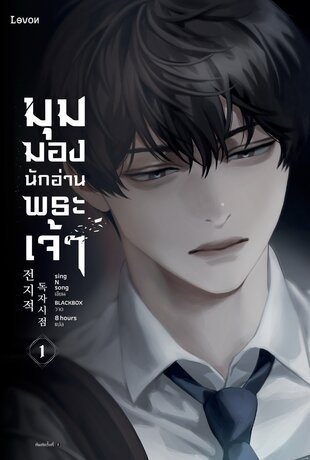

เปิดจินตนาการ
พาผู้อ่านเข้าสู่โลกแฟนตาซีที่มีกฎเกณฑ์และเหตุการณ์ซับซ้อน ชวนให้จินตนาการถึงโลกที่แตกต่างจากชีวิตประจำวัน
[ OMNISCIENT READER'S VIEWPOINT ]

คิมดกจา พนักงานออฟฟิศธรรมดา คือผู้อ่านเพียงคนเดียว ที่อ่านนิยายเรื่อง “สามวิธีเอาชีวิตรอดในโลกที่ล่มสลาย” จนจบ แต่ในวันที่นิยายจบลง โลกของเขากลับกลายเป็นโลกเดียวกับในเรื่อง และเขากลายเป็นคนเดียวที่รู้ว่าเหตุการณ์ต่อไปจะเกิดอะไรขึ้น
ลากหรือปัดเพื่อเลื่อน · แตะการ์ดกลางเพื่อพลิก
Action Dark Psychological Epic Emotional
WHY SHOULD YOU READ IT?
มุมมองนักอ่านพระเจ้าไม่ได้มีเพียงการผจญภัยและการเอาชีวิตรอด แต่ยังชวนให้เราตั้งคำถามกับเรื่องราว ความสัมพันธ์ และมุมมองที่เรามีต่อโลก
พาผู้อ่านเข้าสู่โลกแฟนตาซีที่มีกฎเกณฑ์และเหตุการณ์ซับซ้อน ชวนให้จินตนาการถึงโลกที่แตกต่างจากชีวิตประจำวัน
การติดตามเงื่อนงำ แผนการ และความเชื่อมโยงของเหตุการณ์ ชวนให้ผู้อ่านลองคาดเดาและพิจารณาข้อมูลอย่างเป็นเหตุเป็นผล
ตัวละครมีเป้าหมายและความเชื่อแตกต่างกัน ทำให้เห็นว่าความไว้ใจ การร่วมมือ และการตัดสินใจส่งผลต่อความสัมพันธ์อย่างไร
เรื่องราวตั้งคำถามเกี่ยวกับผู้อ่าน ผู้เขียน และตัวละคร ชวนให้มองความหมายของเรื่องเดียวกันจากหลายมุมมอง